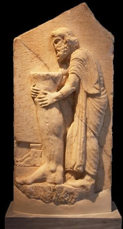

DEL ANTIGUO EGIPTO A GRANADA: BREVE HISTORIA DE LA ESCLEROTERAPIA
Los intentos del ser humano por eliminar las varices son tan antiguos como las primeras alusiones a éstas. Así, en el papiro Ebers (antiguo Egipto, 1550 aC) ya se las menciona, advirtiendo de no tratarlas quirúrgicamente sino con ofrendas a los dioses1, recomendación que se mantuvo durante siglos tal como se recoge en los bajorrelieves del templo de Asclepio (con resultados seguramente parecidos a las de ciertas terapias actuales a base de pomadas, pastillas y otros métodos de dudoso sustento científico).

Exvoto para la curación de una variz del Templo de Asclepio. Museo Arqueológico Nacional (Atenas, Grecia)
En cuanto al tratamiento en sí, y más allá de los procedimientos derivados de la teoría humoral hipocrática2, 3 como las infames “sangrías”, la escleroterapia (término que deriva de la voz griega “escleros”, es decir, dureza, y que supone la introducción en el interior de una vena insuficiente un medio físico o químico para que ésta se fibrose y desaparezca) fue curiosamente anterior a la cirugía.
De hecho, Plutarco en sus textos recoge la primera varicectomía (obviamente sin anestesia), realizada al cónsul romano Gaius Marius (157 - 86 aC). Según se relata, el buen señor aguantó estoicamente la intervención en una de las extremidades pero, al ir el cirujano a por la otra, repuso algo como: “Mejor déjelo. El resultado no merece el dolor sufrido…”.4 Vuelve a ser llamativo que a día de hoy, por supuesto no en todos los casos y salvando las distancias, expresiones similares siguen siendo habituales en pacientes a los que se les practica tales intervenciones.
Respecto a la escleroterapia, siglos antes, Hipócrates (siglo V aC) y Celso (siglo I dC) describieron prácticas rudimentarias5 que combinaban cirugía y cauterización, pero no sería hasta el XVII que hallamos las primeras referencias al suizo D. Zollikofer (1682)6 quien, inyectando un ácido en una variz, trató de inducir su trombosis para eliminarla.
A partir de ahí, fueron numerosos los compuestos empleados con esta intención: ácido nítrico diluido en agua, soluciones de cloruro férrico, de iodo y taninos, perclorato de mercurio, carbonato de sodio, etc. , hasta la llegada en 1946 de los escleroterápicos sintéticos.
Desgraciadamente, y además de los efectos secundarios de algunos (dolor, inflamación, necrosis o tan serios y particulares como la intoxicación mercúrica), todos evidenciaban las limitaciones propias de la escleroterapia líquida: moderada eficacia y seguridad en el tratamiento de pequeñas venas superficiales, telangiectasias y varículas, pero poca utilidad en vasos de mayor calibre, debido a la dilución y arrastre por el alto flujo sanguíneo que sufren al ser inyectados. Esto ocasiona que su concentración intravascular sea desconocida y la acción endovascular irregular, además de imposibilitar el control sobre el tiempo de contacto esclerosante – endotelio.7,8 De ahí que, durante años (e incluso actualmente), quedaran relegados a tratamientos meramente estéticos y que se considerara la cirugía invasiva como única alternativa al de las grandes varices.9
Para superar tales inconvenientes, a mediados del siglo XX surgió la idea de emplear los esclerosantes en forma de espuma: en 1939, Stuart McAusland usó el Morruato Sódico en esta forma10, Robert Foote en 1944 a partir de Etanolamina Oleato y Karl Sigg, en 1949, combinó dicho producto con la técnica “air block” de Orbach, sustituyendo el aire de la inyección y reportando mejores resultados, 11 los cuales el propio Orbach confirmó en 1950. Pero no sería hasta 1956 cuando Fluckiger postuló las características ideales que debía reunir una hipotética espuma de alta eficiencia: pequeño y homogéneo tamaño de burbuja, superficie de contacto aumentada y mayor poder esclerosante a menor dosis de principio activo.
En las décadas de los 80 y 90, aparecieron diferentes sistemas “domésticos” de generación de espuma, como los de Monfreaux,12 Begnini at al.13 o Tessari (sistema de doble jeringa)14. Si bien así se hicieron más accesibles, el problema de dichas “espumas caseras” (“homemade foams”) es que en su formulación emplean aire ambiental, lo que las hace contener un alto contenido de Nitrógeno que inyectado en el torrente sanguíneo resulta nocivo (riesgo de embolia gaseosa)15. Por eso, el volumen a administrar es forzosamente bajo y el área a tratar escasa. Esto, junto a su estructura poco homogénea, conduce a una merma importante de los resultados.16,17
En 1993, el Dr. Juan Cabrera (Cirujano vascular) y su hijo Juan Cabrera García - Olmedo (farmacéutico) concibieron en su Granada natal (España) la idea de producir un esclerosante tensoactivo en forma de espuma, libre de Nitrógeno y que pudiera emplearse en todo tipo de varices (desde las grandes tronculares a las tributarias varicosas, perforantes insuficientes, telangiectasias y arañas vasculares)18, malformaciones venosas (incluyendo las de zonas delicadas)19, úlceras varicosas,20 varicocele y patología hemorroidal.21 De este modo nació la MicroespumaⓅ, una novedosa forma farmacéutica en sí misma que como tal patentaron 22,23. Constituida por gases fisiológicos de elevada solubilidad en sangre, concretamente CO2, y una sustancia esclerosante, el Polidocanol24,25, demostró cumplir con los requisitos básicos antes expuestos de la técnica escleroterápica: conocimiento de la concentración intravascular del agente esclerosante, homogénea, extensa y manejable distribución tras la inyección y control del tiempo de contacto con el epitelio vascular a tratar.
La compañía farmacéutica inglesa BTG adquirió dicha patente y desarrolló un fármaco que inicialmente se llamó Varisolve. 26,27 Éste, superados con éxito los ensayos clínicos requeridos por la FDA, Agencia Americana del Medicamento, y habiéndolo hecho anteriormente frente a la Agencia Europea del Medicamento (EMA), se comercializa en EEUU desde el año 2014 con el nombre de Varithena,28 indicado para el tratamiento de las grandes varices como alternativa a la cirugía y a otras técnicas ablativas,29 y siendo el primer preparado inyectable de origen español que se aprueba y distribuye allí.
Fuera de dicho país no está disponible, salvo en España, donde la escleroterapia ecoguiada con MicroespumaⓅ se realiza de forma exclusiva en las Clínicas Dr. Juan Cabrera repartidas por su geografía.
BIBLIOGRAFÍA
1. Cranley JJ Jr. Selected Topics in Venous Disorders—Pathophysiology, Diagnosis and Treatment. Ann Surg. 1982 Nov;196(5):612–3. PMCID: PMC1352803.
2. Adams EF. The genuine works of hippocrates. London: Sydenham; 1849.
3. Benton W. Hippocratic writings on ulcers. Chicago: Britannica Great Books; 1970. 14.
4. Plutarch: Plutarch´s lives: Caius Marius. Dryden J, translator. The Internet classic archive. 1994 - 1998.
5. JC Wollmann: The History of Sclerosing Foams; Dermatol Surg 2004;30:694-793.
6. Kupinski AM. The lesser saphenous vein: an under - utilized arterial bypass conduct. J Vasc Technol 1987; 11:145.
7. Jia X, Mowatt G, Burr JM, et al. Systematic review of foam sclerotherapy for varicose veins. Br J Surg. 2007; 94: 925.
8. Uncu H. Sclerotherapy: a study comparing polidocanol in foam and liquid form. Phlebology. 2010 Feb;25(1):44-9. doi: 10.1258/phleb.2009.008064. PMID: 20118346.
9. Coppleson VM, The Treatment of Varicose Veins by Injection, Hardcover text,2nd Ed 1929.
10. JC Wollmann: The History of Sclerosing Foams; Dermatol Surg 2004;30:694-793.
11. Thompson M, Morgan R, Matsumura J et al. Endovascular Intervention for Vascular Disease: Principles and Practice 2007; 527.
12. Monfreux A. Traitement sclérosnt des troncs saphènies et leurs collaérales de gros calibre per la méthode MUS. Phlebologie 1997; 50:351.
13. Benigni JP, Sadoun S, Thirion V, et al. Télangiectasies et varices réticulaires: traitement par la mousse d´Aetoxisclérol a 0,25%. Presentation d´une étude pilote. Phebologie 1999; 3:283.
14. Tessari L,Cavezzi A,Frullini A. Preliminary experience with a new sclerosing foam in the treatment of varicose veins. Dermatol Surg. 2001 Jan;27(1):58-60.
15. Willenberg T, Smith PC, Shepherd A, Davies AH. Visual disturbance following sclerotherapy for varicose veins, reticular veins and telangiectasias: a systematic literature review. Phlebology. 2013 Apr;28(3):123-31. doi: 10.1258/phleb.2012.012051. PMID: 23761921.
16. Breu FX, Guggenbichler S, Wollman JC. 2nd European Consensus Meeting on Foam Sclerotherapy 2006, Tegernsee, Germany. Vasa 2008; 37 (Suppl 71): 1.
17. Rabe E, Otto J, Schliephake D, Pannier F. Efficacy and safety of great saphenous vein sclerotherapy using standardised polidocanol foam (ESAF): a randomised controlled multicentre clinical trial. Eur J Vasc Endovasc Surg. 2008 Feb;35(2):238-45. doi: 10.1016/j.ejvs.2007.09.006. Epub 2007 Nov 7. PMID: 17988905.
18. Cabrera J, Cabrera J Jr, García – Olmedo MA. Nuevo método de esclerosis en las varices tronculares. Pathologica Vasculares. 1995; 4:55.
19. Cabrera J, Cabrera J Jr, García – Olmedo MA, Redondo P. Treatment of venous malformations with sclerosant in microfoam form. Arch Dermatol. 2003 Nov; 139 (11): 1409 – 16.
20. Cabrera J, Redondo P, Becerra A, et al. Ultrasound – guided injection of polidocanol microfoam in the magement of venous ulcers. Arch Dermatol 2004; 140:667.
21. Cabrera J, Cabrera J Jr, Becerra A, Matilla J, Sánchez R, López G. Polidocanol foam sclerotherapy in patients with haemorrhoids, using an anoscope: a retrospective study. ACP 2014 28th Annual Congress. Phoenix, Az. USA.
22. Cabrera J. Dr J. Cabrera is the creator of the patented polidocanol microfoam. Dermatol Surg. 2004 Dec;30(12 Pt 2):1605; author reply 1606.
23. Gobin JP, Benigni JP. Précisions sur l´origine de la Mousse Sclerosant. Phlébologie 2006; 59, nº2: 119.
24. Eckmann DM. Polidocanol for endovenous microfoam sclerosant therapy. Expert Opin Investig Drugs. 2009 Dec;18(12):1919-27. doi: 10.1517/13543780903376163. PMID: 19912070; PMCID: PMC2787977.
25. Li N, Li J, Huang M, Zhang X. Efficacy and safety of polidocanol in the treatment of varicose veins of lower extremities: A protocol for systematic review and meta-analysis. Medicine (Baltimore). 2021 Feb 26;100(8):e24500. doi: 10.1097/MD.0000000000024500. PMID: 33663056; PMCID: PMC7909103.
26. Wright D, et al. Varisolve (r) polidocanol microfoam compared with surgery or sclerotherapy in the the management of moderate to severe varicose veins: European randomizad controlled trial. J Vasc Surg 2006; 21:180.
27. Todd KL 3rd1, Wright DI2; VANISH-2 Investigator Group.The VANISH-2 study: a randomized, blinded, multicenter study to evaluate the efficacy and safety of polidocanol endovenous microfoam 0.5% and 1.0% compared with placebo for the treatment of saphenofemoral junction incompetence. Phlebology. 2014Oct; 29(9):608-18.doi: 0.1177/0268355513497709.
28. Varithena microfoam https://www.ncbi.nlm.nih.gov/pubmed/28166694.
29. Gibson K, Kabnick L; VarithenaⓅ 013 Investigator Group.A multicenter, randomized, placebo-controlled study to evaluate the efficacy and safety of VarithenaⓅ (polidocanol endovenous microfoam 1%) for symptomatic, visible varicose veins with saphenofemoral junction incompetence. Phlebology.2017 Apr;32(3):185-193.
Dr. Gonzalo López
Especialista en flebología. Doctor en Ingeniería Tisular, especialidad en BiomaterialesClínica Dr. Juan Cabrera (A Coruña)
Productos Y Servicios
Si quieres conocer nuestra gama de productos más detalladamente y de manera cómoda aquí puedes ver todos nuestros productos
ver másContacta
¿Alguna duda acerca de nuestros productos o servicios? Aquí tienes todas las formas de contactar con nosotros
ver masTe Llamamos Gratis
Si tienes alguna pregunta sobre nuestros productos o servicios o necesitas consejos sobre algo relacionado con nuestro negocio, por favor déjanos un teléfono fijo o número de teléfono móvil y te llamamos gratis.
ver mas